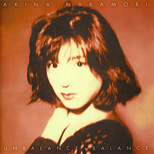

录音室专辑：第15张
发行年份：1993年
发行日期：9月22日
| 歌名 | 作词 | 作曲 | 编曲 |
|---|---|---|---|
| 永遠の扉 | 夏野芹子 | 玉置浩二 | 千住明 |
| 愛撫 | 松本隆 | 小室哲哉 | 小室哲哉 |
| 黒薔薇 | 松本隆 | OSNY MELO | OSNY MELO |
| YOU ARE EVERYTHING | 鮎川めぐみ | OSNY MELO | OSNY MELO |
| 光のない万華鏡 | 中森明菜 | 関口誠人 | OSNY MELO |
| 眠るより泣きたい夜に | 夏野芹子 | BRO.KORN | OSNY MELO |
| NORMA JEAN | 松本隆 | 小室哲哉 | 小室哲哉 |
| NOT CRAZY TO ME (LP edit) | NOKKO | 坂本龍一 | 坂本龍一 |
| 陽炎 | 中森明菜 | 玉置浩二 | 鳥山雄司 |
2002年12月4日UNIVERSAL J重发版 UNBALANCE+BALANCE+6 增加：
| 歌名 | 作词 | 作曲 | 编曲 |
|---|---|---|---|
| Everlasting Love | 大貫妙子 | 坂本龍一 | 坂本龍一 |
| NOT CRAZY TO ME | NOKKO | 坂本龍一 | 坂本龍一 |
| 夜のどこかで 〜night shift〜 | 夏野芹子 | 後藤次利 | 後藤次利 |
| Rose Bud | 夏野芹子 | 後藤次利 | 後藤次利 |
| 月華 | 松井五郎 | 梶原秀剛 | 松本晃彦 |
| BLUE LACE | 鮎川めぐみ | 柿原朱美 | 山川恵津子 |
首发规格：CD: MVCD-9，CT: MVTD-4，DCC: MVXD-7
唱片公司：MCA Victor
排行榜：Oricon公信榜专辑周榜第4位
再发行：
2002年12月4日 - CD: UMCK-1149
2005年7月1日 - 数码下载
2017年5月3日 - UHQCD: UPCH-7267